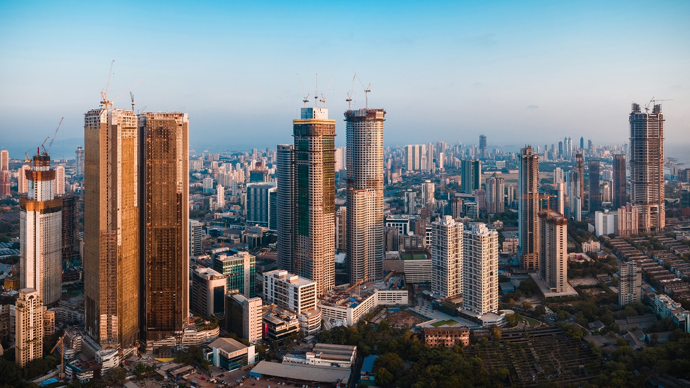

Area:- 17 million square miles(largest continent)
No. of countries:- 48
Population:- 4600 million
About the Asia(very short)
Asia is the largest continent on Earth. It covers 9% of the Earth's total surface area (or 30% of its land area), and has the longest coastline, at 62,800 kilometres (39,022 mi).
Asia is generally defined as comprising the eastern four-fifths of Eurasia. This is a huge continent it has a variety of culture. This Continent has many different religions and traditions.
This is a big continent with the highest no. of countries and with a variet culture, religion, tradition, different style of arts, music and dance.
2 out of 7 wonders of the world is here.
Countries in this continent are also great like India the country of tradition and knowledge, and on the other hand we have Japan the hub of technology.

For more information, Go to Asia wikipedia
Why you should visit Asia:
It has infinite no. of places to visit. Tallest mountain MT. Everest is here.